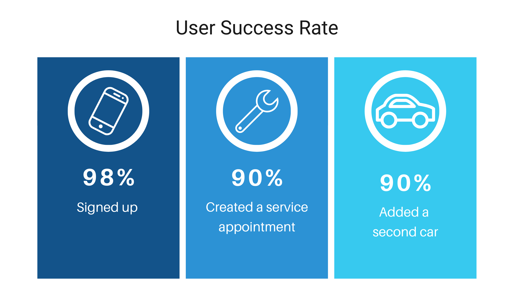
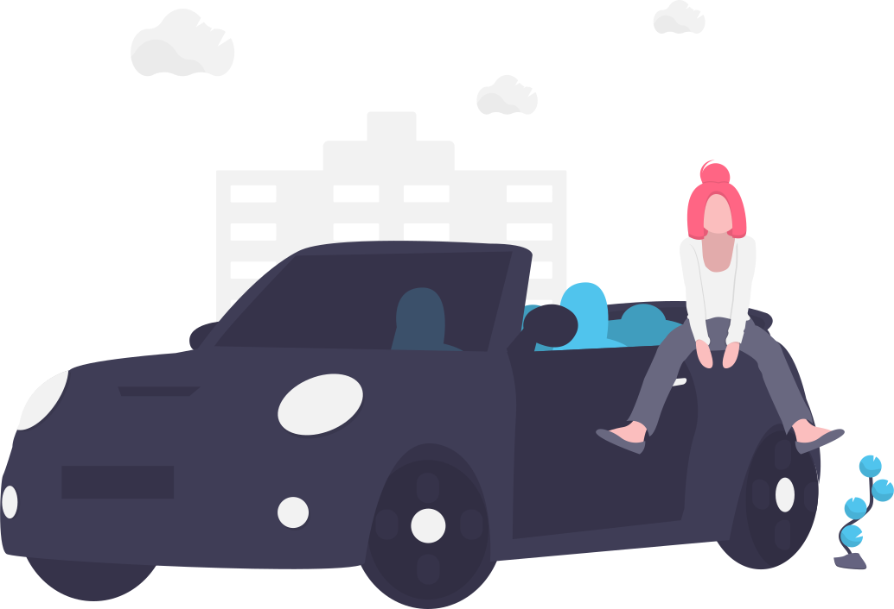
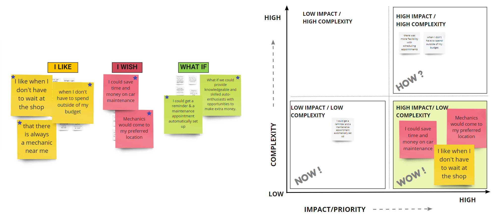

A mobile app which makes car maintenace easier for users
OVERVIEW
As car owners, we frequently feel inconvenienced by minor car maintenance such as oil changes, air filter replacements, or changing a tire. Many of us neither have the time nor the skills and knowledge to do these tasks ourselves.
We designed mobile app which allows users to schedule car maintenance at the time and location that works best for them . Tune Up also allows users to track their maintenance history, and will notify users once maintenance is needed again.
Problem
Users with busy schedules often ignore maintenance of their cars which may lead to dangerous outcomes if left unchecked.
Solution
Tune Up app makes the process of minor car maintenance more convenient for those with busy schedules by allowing users to schedule car maintenance at the time and location that works best for them.
Impact

Hypothesis
By users to schedule car maintenance at the time and location of their convenience we could timely routine maintenance and better vehicle-care.
Methodology
We began our project by focusing on two main points:
Who are our users?
What are their main pain points?
We used the following methodology to tackle this project:
User Research - Definition & Ideation - Prototyping - Testing & Iterating
USER RESEARCH
Our research methodology consisted of qualitative research through five user interviews, which was then supplemented by more qualitative data collected through a survey.
User Interviews
Ideal Users
The ideal participants include millennials ages 20-40 who own a car and have little to no knowledge of car maintenance.

Research Goals
We set four main research objectives, to narrow down and identify the factors that influence decisions on taking a car for service /maintenance:
Survey
To supplement our user interviews we conducted an initial survey. We prepared a questionnaire and send it out among our target demographic via Facebook and emails. Our goal was to understand the thoughts and actions of a car-owner, and identify pain points and needs in regards to vehicle-maintenance. 13 people responded to our survey and these are our key findings:
Interview Research Analysis
We conducted online interviews with potential users about their feelings and experiences with car maintenance, particularly regarding routine services and minor maintenances.
We analysed the data recieved from our interviews and decided to use the affinity mapping technique to find valuable insights. We were able to categorize the interviewee feedbacks into 6 main categories:
Persona
Based on our anlysis of user interviews and surveys we developed our initial proto persona into our User Persona - Jessica Gomez.
Jessica's Pain Points:
Busy work schedule
No time to take her car for maintenance
Feels like wasting time waiting for minor services
DEFINITION & IDEATION
To tease out more insights and to empathize with our user ‘Jessica Gomez’ better we did a storyboard. This helped us in shaping her user journey and getting to know Jessica better.
Story Board
User Journey
Competitor Analysis
We did a competitor SWOT analysis to identify our competitors and evaluate their products to determine: Strengths, Weaknesses, Opportunities & Threats. We examined 3 direct and 2 indirect competitors. The three main reasons for doing a SWOT analysis were to:
Evaluate the major competitors in the space
Examine our product's standing
Identify innovations to stand out
Brainstorming
Finally, as our team sat down to brainstorm, we linked together the persona, the user journey, and all the research findings to develop requirements for the product. We employed the ‘I like, I wish, What if’ design thinking to prioritize our app features.

Our Focus:
High impact/Low complexity
PROTOTYPING
Based on the outcome of the ideation& definition process we decide to tackle the prioritized features to ensure that we deliver value to our user, Jessica, as well as the stakeholders. We began this process by creating a user flow:
Low Fidelity Sketches
Keeping Jessica and her paint points in mind I started the prototyping process by sketching on paper. We then did a round of preliminary user testing by importing the sketches into figma and creating hot spots.
Mid Fidelity Wireframes
After collaborating and finalizing on the sketches, we created a mid-fidelity wireframe in figma and ran several usability tests to see if our design was accessible, intuitive, and communicated well with the users.
Here is a user flow to add additional services:
TESTING & ITERATING
We did online one-on-one usability testing on our mid-fi prototype to get valuable feedback on our design. This helped us validate some of our design choices and pointed us to more pain points and opportunities for improvement in the app.
We assigned 3 tasks to our users to complete:
Having collected all the usability test data, we analyzed it to gain insights to work on our iterations to address the user pain points and improve the app.
Iterations
High Fidelity Prototype
After analyzing the usability tests on our mid-fi wireframes and iterating them to incorporate the findings, we moved into the next step in our design process – High fidelity prototyping. We started off by working on our style guide. Blue was chosen as our primary color as it stands for trust, loyalty, sincerity, and wisdom.
Style Guide
We started off by working on our style guide. Blue was chosen as our primary color as it stands for trust, loyalty, sincerity, and wisdom.
Final Product - High Fidelity
High Fidelity Prototype in Action
FINAL THOUGHTS
We were not able to incorporate some of the features like maintenance reminders and possibilities of a subscription-based service due to time constraints. There were also thoughts on adding background checked users-vetted car-enthusiasts (not certified mechanics) skilled in minor maintenance to our service; this would bring down the cost of services and further expand the pool of skilled personnel for the user. In the future, we would like to explore those ideas more.
We learnt a lot from this project. The most valuable lesson was the importance of user research and testing. There are no short-cuts to user-empathy; it is all about whole-heartedly listening to the user. We also learnt the importance of keeping designs simple and about design collaboration and coherence when working in a team.